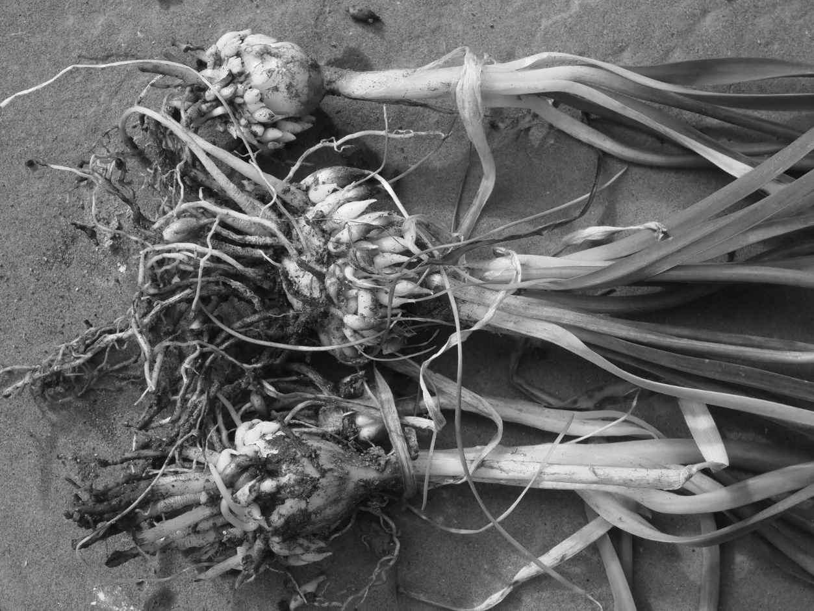
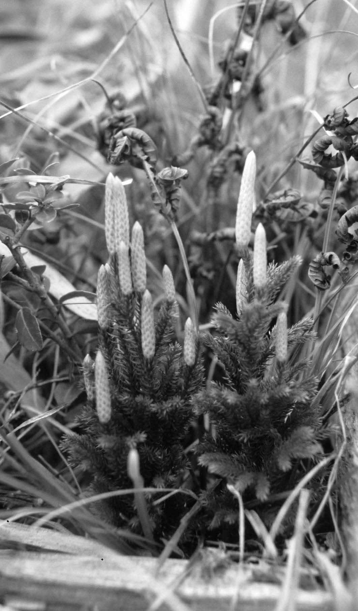

生产与亲本类似的更多新个体是生物体的定义特征之一，植物也毫无例外地遵守这项原则。当植物最初迁移到陆地和空气中时，它们所具有的生殖系统只适用于水中，但这在水分并非无处不在的地方仍然能发挥功能吗？显然，答案是肯定的，但植物仍需要做出一些变化。
在我们见到的大多数（如果不是全部）陆生植物的主要类群中，繁殖更多植物有两种从根本上完全不同的方式。更简单的方法是进行营养复制。这种方法的优势在于：要比有性生殖更加简单；只需一棵植物就能进行繁殖；更加迅速；如果亲本对环境的适应极好，那么后代也将如此。我们发现营养生殖（或无性生殖）是入侵物种的普遍特征，所以这种策略显然具有强大的短期优势。植物进行自身的独立复制有许多种方式。
苔类植物具有一种被称为胞芽的结构。这是一种未分化的细胞团，生长在叶状体表面的胞芽杯中。当这个细胞团准备好被释放时，它便被雨滴移出并被冲刷走。当它停止移动后，便能生长成和亲本一样的植物。皱蒴藓（Aulacomnium androgynum ）等藓类植物可由茎尖产生胞芽。这些胞芽并非无定形的团状，而是具有明显的末端，在分生组织的顶端细胞和基底细胞之间有几个细胞。这些胞芽的传播可以借助任何可利用的方式。
在英国湖区走路滑倒过的人都会对欧洲蕨（Pteridium aquilinum ）的传播能力印象深刻。这种植物在山坡上生长的过程中，每个个体的嫩芽都与亲本植物相连接。然而，每个嫩芽都有自己的根部系统，也完全可以依靠自己的能力生存。其他一些蕨类植物可以通过叶片生产小型植物。胎生铁角蕨（Asplenium viviparum ）和珠芽铁角蕨（Asplenium bulbiferum ）就是两个这样的物种。
在裸子植物中，营养生殖相对罕见，但人们熟知的一个例子就是北美红杉（Sequoia sempervirens ）。这个物种在其基部周围的环形范围内繁殖年幼的植物。当亲本植物死亡后，它就会留下沿同心环生长的年幼树木。最终，这些树木每一棵又会产生另一个环状的替代品。我们可以认为这是一种再生方式，而非植物的繁殖，因为其中没有传播迹象。塔斯马尼亚的泣松（Lagarostrobus franklinii ）也会产生这种长寿的无性系种群，人们认为这一种群的年龄已经超过一万年，它们因此也是地球上年龄最大的生物体或基因型。
正如所有的园艺家都知道的，营养生殖在开花植物中非常常见。偃麦草（Elytrigia repens ）、羊角芹（Aegopodium podograria ）和田旋花（Convolvulus arvensis ）就是三种在栽培地大获成功的杂草植物，因为它们能够由挖掘后留在土壤中的一小段植物再生为成熟植物。如前所述，许多世界上最具入侵性的植物物种可以通过快速的无性生殖传播占领某个地区。这类植物就包括黑海杜鹃（Rhododendron ponticum ）和黑莓。在前者中，植物体最低的枝条会在接触土壤时生根；在后者中，茎尖与土壤接触几周后就会生根。这种繁殖方式中有一种极其狡猾的变体是在无味假葱（Nothoscordum inodorum ）中发现的，无味假葱在其主球茎周围以及花期中的花附近会产生小球茎或珠芽。再加上大量的种子生产，人们无法将这种植物从我们不需要的地方根除。大薸（Pistia stratiotes ）会在侧芽末端产生完美的小植株。这些植株会因大型动物的扰乱而折断。然而，如果不受干扰，这个物种将形成巨大的垫子，成为足以支撑起犀牛（虽然是小犀牛）的漂浮岛屿。

图7 假葱属植物（Nothoscordum ）可在亲本球茎周围长出许多小珠芽，使其成为一种非常顽固的杂草
在一些植物中，有性生殖和无性生殖之间存在着一种折中的方式，叫无融合生殖，或者有时叫作孤雌生殖，这是在讨论动物时更常用的术语。在无融合生殖中，含有可用胚胎的种子在卵子没有受精的情况下产生。这意味着种子在基因上与亲本植物是相同的。对于植物学记录员来说，问题在于世界上的每个地区都可能存有该物种稍微不同的克隆体。蒲公英就是这样，具有250多种已命名的小种，但这些都只是靠营养生殖而由母体分离而成的植物。这些克隆体可能很短命，但这里对于保护有一些启发。我们是要保护每一个变种，还是应该保护维持这些小种数量的过程呢？
然而，如果栖息地发生变化，当前能够很好地适应特定的栖息地并不能保证未来的成功。虽然进化是无法预见的，但是在有性生殖过程中，通过基因突变和重组来产生变异的能力可以为进化提供修正，这也是达尔文所认为的进化核心。正如达尔文所认为的，“这是自然界的一般法则，没有哪个有机体可以世世代代自我受精”，因为这会导致使后代变得越来越弱的“近交衰退”。在这种情况下，我们来看看第二种更为复杂的繁殖方式，那就是有性生殖中精子和卵子的融合。
在第一章中，我们介绍了植物的生命史，其中涉及植物特有的一种策略——二倍体和单倍体阶段的交替，即世代交替。如果我们接受轮藻属等绿藻是与陆生植物亲缘关系最接近的物种，并且接受苔类植物是陆生植物在进化树上最低分支的现存后代，那么这两类植物之间的差异，就是植物何以迁移到陆地和空气中的线索。在第二章中，我们已经讨论过植物所面临的诸多问题是如何解决的（干燥环境、支撑、寻找原料和营养），但有一个突出的问题就是：当此前在无所不在的水环境中游动的方法并不总能被采用时，配子将如何结合。
简单回顾一下，轮藻属植物可以产生许多带有两条尾巴（或者叫鞭毛）的精子，它们游向另一株植物，那里有很多卵子位于藏卵器中。精子使卵子受精（每个卵子一个精子）并产生一个合子。合子随后经过减数分裂产生四个孢子。精子、卵子和孢子都含有一组染色体（单倍体），而合子则含有两组染色体（二倍体）。这种生命史和所有的陆生植物之间有一处很大的差异，还有几处较小的差异。这种很大的差异在于，陆生植物的合子不会立即进行减数分裂；相反，它会发生有丝分裂（简单的细胞分裂）并发育成胚胎。这是一种新方式，也是陆生植物被称为胚胎植物的原因（主要是由植物学家！）。
所以我们从苔类植物，特别是地钱开始介绍，因为这可能是我们研究最多、理解最透彻的苔类植物。地钱是一种深绿色的叶状植物，像湿的肝脏一样闪闪发光，在潮湿的生长介质表面扩散时分叉。在叶状体表面可能有胞芽杯，每个直径约5 ～ 8毫米。然而，在一年中特定的潮湿时期，我们可以看到叶状体表面生长出伞状结构。有一些伞状结构具有完整的顶部，而有些伞状结构看起来只剩一副骨架，就好像所有的布料都被吹走了，只有辐条仍然存在。
在完整伞状结构的上表面，精子会从精子囊中游走。这些精子囊是轮藻与陆生植物之间的较小差异之一，尽管它们看起来 与轮藻的精子产生器官没有太大区别。雄器是陆生植物中发现的两种配子囊（gametangium）之一。［英文中的后缀-angium/-angia用于描述生殖结构，因此gametangium产生gametes（配子），sporangia（孢子囊）产生spores（孢子）。］另一种配子囊是产生卵子的配子囊——颈卵器；颈卵器是轮藻与陆生植物之间的另一处较小的差异，尽管它们看起来 和轮藻的卵子产生器官也没有太大区别。有一处显著的区别在于，颈卵器只产生一个卵子，而轮藻的藏卵器则能产生很多卵子。
所以精子利用两根鞭毛游向颈卵器中的卵子。这些颈卵器位于只有辐条的伞状结构的下方。这些植物为雌雄异株，所以每株植物只有一种伞状结构。这些植物性别的决定机制是遗传性的，并且是由异形染色体造成的：一个小的Y（雄性）染色体和一个大的X（雌性）染色体。这听起来可能很熟悉，事实上在人类中，雄性是XY而雌性是XX；但你必须记住，产生配子的苔类植物（配子体）是单倍体，所以雄性是Y，雌性是X。同时，我们再回到苔类植物的颈卵器中，卵子已经被精子受精，形成了二倍体的合子。这个合子现在分裂并成长为胚胎。它不 会由颈卵器释放出来，而是从雌配子体中获得营养。胚胎生长并且发育成挂在柄上的一个囊；这就是苔类植物的孢子体。它不是独立生活的，而是依赖配子体度过它的“一生”。在这个囊内，孢子被产生出来并包裹在胞粉素中。这就是第一章中介绍过的坚硬外层。因此，这个囊就是孢子囊。孢子是经过减数分裂后产生的，减数分裂使染色体的数量从二倍体减少到单倍体。所有的孢子看起来 都一样，所以我们说这种植物具有同形孢子。实际上，孢子并不完全相同，因为一半孢子是雌性，一半孢子是雄性，但是它们的大小相同并且由相同的孢子囊产生。
这些孢子从破裂的孢子囊中脱落，被风吹走或是被水冲走。孢子是坚硬的小型结构，因为它们拥有遗传自水生祖先的孢粉素外壳。当孢子停靠在合适的介质上，并且温度和湿度合适时，它们就会萌发。孢子要么成长为雄性叶状体，要么成长为雌性叶状体，然后这些配子体继续长大直到成熟，当它们撑起伞状结构时，生命史便完整了。
藓类植物的生命史与之相似，但有所不同。我们已经知道藓类植物比苔类植物领先一步，因为它们具有气孔。我们可能更熟悉藓类植物，因为它们都是常见的植物，生长在城镇的墙上和花园的草坪上。生长在墙壁上的植物在我们所考虑的问题上更为有用，因为在一年中的某些时候，特别是冬末春初，这些植物会故意展示出一些类似潜望镜的小型结构——一根细细的丝状茎上支撑着几毫米长的孢蒴。这个孢蒴就是孢子囊，所以从其开口端长出的是坚硬的单倍体孢子，这些孢子看起来也都一样。我们对藓类植物配子体性别的鉴定一无所知，但在角齿藓（Ceratodon purpureus ）中，它可能是由性染色体的遗传决定的。然而，在小立碗藓等部分藓类植物中，孢子萌发并生长为两性（或雌雄同体）配子体。
无论配子体是两性还是单性，精子囊和颈卵器都会发育，且通常位于叶状芽的顶端附近。天气潮湿时，精子从精子囊游动到颈卵器中，希望在那里找到它梦中的卵子。我们还不清楚精子寻找颈卵器的方式，但在某些物种中，颈卵器似乎会发出一种化学信号。精子使卵子受精后，合子就生长为多细胞结构，并长成孢子体。在泛生墙藓（Tortula muralis ）中，孢子体就是晚冬时节我们在墙上看到的“潜望镜”。在孢蒴中，减数分裂发生，单倍体孢子产生，生命周期就此完成。
在生命之树上，现存植物物种的下一个主要类群是蕨类植物。如果查看蕨类植物老叶的下方，你经常能看到破裂的脓疱释放出棕色的粉末。如果你把叶子从植物上剪下来，轻轻地固定在一张白纸上，然后把白纸放在锅炉或雅家炉上过夜，第二天早上摘掉蕨类植物的叶子时，纸上就能完美地展示出蕨类植物叶片的孢子囊分布，因为棕色的粉末就是包裹在孢粉素中的上千个完全相同的孢子。这意味着破裂的脓疱就是孢子囊，而叶片就是孢子体的一部分。这显然要比生长在墙顶上的小型藓类的“潜望镜”大得多，而且在另一方面也有所不同：这种成熟蕨类的孢子体是独立生存的，而潜望镜般的藓类孢子体则完全依赖于它们下面的配子体。
所以孢子被释放并被吹走，希望能降落在一片潮湿的土壤或是一根潮湿的树枝上，或者任何湿度确实较高并且含有一些营养物质的“土壤”。孢子萌发并长成配子体。配子体是独立生存的绿色植物体，但它们不是很大。配子体在任何方向都很少超过10毫米。它们通常是扁平的叶状体，在许多情况下都与小型苔类植物没有什么区别，而且因为二者经常在相同的条件下一起生长，所以蕨类植物的配子体可能会被误认为是苔类植物。配子体可以是雄性、雌性或者两性的，这取决于物种或是环境条件。在水蕨（Ceratopteris richardii ）中，第一个萌发的孢子是两性的，可同时产生颈卵器和精子囊。然而，这些前期配子体会产生一种激素，影响附近所有新萌发孢子的发育，如果激素在最初几天（2 ～ 4天）到达这些年幼的配子体，那么配子体就完全是雄性的，只产生孢子囊，因此只有精子。这种策略的优势在于它促进了远交。另一种促进远交的方法是让配子体在不同的时间产生配子囊，即先成为雄性一段时间后再成为雌性，反之亦然。
配子体同时产生精子囊和颈卵器的一个固有问题就是它只能产生自受精卵，因此合子就是配子体的二倍体克隆。查尔斯·达尔文的生物学金句合集中有一句是“大自然憎恶重复的近亲繁殖”，正如我们将在本章中稍后提到的，大自然为避免近亲繁殖而陷入诸多麻烦——大多数时候都是如此。“大多数时候”是因为所有植物，不管是水生的还是陆生的，都面临着一个挑战，那就是它们不能移动。如果某些植物是该物种在附近地区的唯一成员，那么如果它们一定需要另一株植物的精子进行受精的话，它们就根本无法繁殖后代。所以很多植物都有一种策略：如果没有其他选择，它们就会接受自己的精子，这样至少能繁衍下一代，获得下一次远交的机会。达尔文把这种策略称为“繁殖保障”，而且这种策略非常普遍。
抛开对精子从何处游走的担忧（现在它们有许多鞭毛可以帮助移动），合子在颈卵器中形成并长成胚胎。然而，胚胎之后会在配子体上方产生一小片叶子，以及在其下方产生一小条根，而不是在某种类型的茎上长成孢子囊。这种年幼的植物最初是由配子体进行供给的，但是当它有一些叶子和根的时候，亲本配子体已经耗尽了它所有的资源，成为一副空壳——这可能也是一个对人类状况的隐喻。
到目前为止，这个故事中所有的孢子体都只产生了一种孢子；它们都具有同型孢子。人们认为，像库克逊蕨这样的化石植物也具有同型孢子。然而，现存的许多植物类群和绝大多数植物物种都具有异型孢子。孢子异型已经经过了几次进化，而第一次进化可能是在蕨类植物出现之前。在生命之树上，位于藓类植物和蕨类植物之间的是石松类植物。这种相当神秘且多样化的植物类群是最早长成树木的植物之一，也是最早产生雌雄孢子的植物。在任何情况下，我们都不能把这些孢子与配子混淆。因为是孢子，所以它们和配子一样都是单倍体，但孢子所能做的就是长成配子体。孢子不能相互融合而产生二倍体合子。
陆生植物的最后一个主要类群都具有异型孢子，它们就是种子植物：裸子植物和被子植物。裸子植物包括针叶树、苏铁、银杏和一小群植物怪胎，其中包括来自纳米布沙漠的标志性奇观百岁兰（Welwitschia mirabilis ）以及药用麻黄碱的原始来源双穗麻黄（Ephedra distachya ）（详见第六章）。另一方面，被子植物则是开花植物。人们相信种子植物拥有一个共同的祖先，还认为它们最近的共同祖先也是具有异型孢子的，但这位祖先的形态在科研领域仍然是许多人职业生涯里的研究对象，它也激发了许多猜测。种子植物的出现可能是一个谜，但根据达尔文的说法，被子植物的起源则是一个“令人憎恶的谜”，目前仍未解开。

图8 日本的石松。这种植物的近亲是最早长成树木的植物之一
进化是一件复杂的事情。它没有先见之明，所以只是保留了在当前有效的机制，并没有储存很多在未来可能有用的东西。这种做法也相当冷酷。达尔文相信，没有哪种生物会为了除自身外的其他生物的益处而获得某种特性。对某种生物有利的事物可能会在未来的某个时候被另一种生物所利用，但进化不会考虑到这一点。种子就是一个很好的例子。假如种子没有在种子植物身上进化出来，便很难想象现在世界的样子。包括65亿人类在内的许多动物都把种子作为主食。然而，种子只有在给予植物优势时才能发生进化。这些优势可能是生存和传播，可能是在传播中生存下来的能力。所以种子在空间和时间上均可进行运输。但是种子是什么？它是如何产生的呢？我们已经在第二章中将种子描述为“包裹在坚硬外壳中、口袋里还装有盒饭的胚胎”。如果种子里已经有了一个胚胎，那么这个胚胎是在繁殖发生之后 形成的。
如果你曾经在春天把车停在雪松（Cedrus spp.）树下，你回来时很可能会发现车上覆盖着黄色的灰尘。你甚至可能在车周围的地面上发现一些柔软的、香肠形状的球果。如果仔细看看这棵树，你会看到更多这样的小球果和一些直径几英寸的非常大的木质球果。这些木质球果内部就是这部分故事开始的地方，因为我们在其中发现了孢子囊。（事实上它被称为大孢子囊，因为它所产生的孢子要比种子植物中发现的其他类型的孢子囊产生的更大。）这些孢子并不像我们目前在每个物种中所观察到的那样被释放出来。大孢子被保留在球果中，并在此处生长成与蕨类植物配子体大小相似的雌配子体。颈卵器生长在配子体上，所以这与蕨类植物也没有太大区别，只是配子体不是独立生存的，而是完全依赖于孢子体的营养。
如果这些内容还有意义的话，你应该问问自己，雄配子体在哪里？当然，雄配子体形成于其他地方，然后它们必须找到雌配子体。雄配子体生长于小孢子囊产生的小孢子中，而这些孢子囊存在于其他球果中，也就是你在汽车引擎盖上发现的那种球果。小孢子形成时带有传统的孢粉素外壳。然而，在它们被释放之前，孢子内部经历了少量的细胞分裂，另外还有两个大的气囊生长在孢粉素的外部。这整个结构就是一个未成熟的雄配子体。它未成熟是因为它还不能传播精子。这个未成熟的雄配子体希望找到一个成熟的雌配子体。但问题在于，雪松并不像蕨类植物、藓类植物和苔类植物那样，两种配子体一起处于土壤上，而是雌配子坐落在树上其他位置的木质球果里，或者最好是坐落在另一棵树上。
机灵的雄配子体通过滑翔来寻找雌配子体，并利用气囊在空中飘浮。它们希望其中一个雄配子体能降落在木质球果上，而且最好是另一棵树上的木质球果。发生这种事的可能性是百万分之一，但这已经足够了。这些能够滑翔的未成熟的雄配子体更常被称为花粉粒。当它落在木质球果上时，花粉粒从我们发挥想象为之命名的花粉滴中吸收水分。花粉粒随后长出一根花粉管，花粉管顶端就是一个精子细胞。这种精子不是由精子囊产生的；精子囊如今已成为进化的历史了。这种精子没有鞭毛，所以花粉管必须长到雌配子体颈卵器的颈部，而雌配子体一直在耐心地等待它的雄性访客。精子使卵子受精，然后产生一个合子，并长成一个胚胎；到目前为止情况还不错，只是胚胎距离合适的生长地点还很远，所以它的发育中止了，木质球果的一部分为其提供了一层厚厚的外壳，而雌配子体则承担起“旅途食物”的角色。种子从木质球果中释放出来并飘到地面上，希望能与它的母亲保持一定距离。到了地上，胚胎恢复生长并成长为一棵雪松。
如果这棵雪松被换作橡树、木兰或是水仙花，那么把精子和卵子聚集在一起的过程又将有所不同。这些开花植物确实能产生花粉，但它们不是位于球果中的小孢子囊，而是位于花朵雄蕊末端的花药中。开花植物的花粉类似于雪松（和其他裸子植物）的花粉，因为它也是一个未成熟的雄配子体，在寻找一个成熟的雌配子体。开花植物花粉所面临的问题在于，雌配子体及其卵子被藏在心皮内。心皮是裸子植物向开花植物进化过程中的重大创新。心皮由三部分组成：柱头（花粉的着陆点）、花柱（长度根据物种而有所不同，是柱头和子房的连接茎）和子房（包含雌配子体，每个雌配子体都有自己的卵子）。雌配子体由大孢子发育而来。这些大孢子是由子房中的大孢子囊产生的。必须指出的是，与其他陆生植物所产生的一切相比，这些雌配子体不过是配子体的一个可悲的道歉。这些被子植物的雌配子体仅由几个单倍体细胞（其中一个就是在没有颈卵器帮助下产生的卵细胞）和一个具有两个单倍体细胞核的细胞组成。我们很容易提出充分的理由来说明这种双核细胞应被授予“世界上最重要的细胞”的奖项，因为它们不仅发育成胚胎的食物，而且还成为水稻、小麦和玉米的谷粒，为全世界供应了食物。
所以花粉会降落在柱头上。花粉究竟如何精准地找到柱头可以说是植物生物学中最好的故事之一，我们将在本章的结尾处讨论这个问题。现在，我们可以假设未成熟的雄配子体已经落在柱头上，而它面临的问题才刚刚开始，因为这只是“拜见岳母”。柱头有两个问题要询问这位年轻的男性。第一，你是正确的物种吗？有些母亲没有其他人那样挑剔，或者只是在外形上有所考验，这就是为什么有时来自另一个近缘种的花粉会通过考验并有可能产生杂交后代的原因。这可能是产生新物种的一个非常重要的方式，进化可以利用或丢弃。第二个问题是，你是我吗？和所有的生物一样，近交对植物来说也是退而求其次的选择。同样，有些植物在这方面比其他植物更加勤勉。例如，十字花科的植物非常小心避免被自己的精子受精。一旦花粉恰当地回答了这些问题，水分就会被传递给花粉，花粉管就向下生长直到花柱。可能有不止一个花粉粒已经发芽，有证据表明花粉粒在当前存在一种对卵子的竞争，针对特定性状的选择可能在这一阶段发生。
当花粉管从花柱的末端伸入子房时，它会朝卵子的方向生长，并且释放两个而非一个精子。其中一个精子做了体面的事情，找到一个卵子并与其结合成真正的合子。这个合子长成胚胎，胚胎的发育随后受到抑制，正如裸子植物中发生的那样。然而，第二个精子不仅仅是一个备用精子。它需要找到具有两个单倍体核的雌配子体细胞。第二个精子与这个奇怪的细胞融合，所产生的细胞就是三倍体，即每个染色体都有三个副本。这个双核细胞可能被看作“世界上最重要的细胞”的原因在于，它继续生长为胚乳，而胚乳不仅是胚胎的食物供给，也是智人的食物供给。当我们食用由水稻、小麦或甜玉米制成的所有食物时，我们吃的就是三倍体的胚乳。
那么，开花植物的花粉究竟是如何进行精准移动的呢？好吧，在某些情况下，花粉并不能移动，它们通常在极为偶然的机会中利用风来移动。花粉很少利用水，但是如果能为动物提供适当奖励的话，它们通常会雇用动物。奖励可以是多种多样的。饲料（花蜜、淀粉以及花粉本身）、一张过夜的床、一张和别人过夜的床、一个产卵和养育后代的地方，这些都是植物所能提供的奖励。奖励的大小取决于来访者的体型，所以鸟或蝙蝠要比摇蚊需要更大的奖励。吸引传粉者非常重要，但动物都很直接，所以吸引动物也很简单。气味、形状和颜色都会被利用起来。有些植物只与一种传粉者陷入非常密切的关系，只要传粉者没有发生状况，这种关系就很明确。有些植物物种则不在乎是谁到访，只要有人来帮它们传粉就可以了。这将增加花粉落在不合适的柱头上的风险，但这株植物至少已经有人访问过。
我们通常可以将传粉者与花相互配对，而传粉综合征的研究也是查尔斯·达尔文实验工作的一部分，这给予了他最大的乐趣。他写下了大量关于植物采用各种计谋的内容。然而最近的研究表明，和植物生物学的许多内容一样，这种关系并不像人们想象的那样精确。有些没有特殊适应能力、看似通才的花仍然只接受一种传粉者的到访，相反，有些看似适应良好的花则被许多不同的生物访问。同样地，尽管我们有可能描述出完美的蜜蜂授粉花或者是鸟类授粉花，但当你寻找它们的时候，自然界中却很少有这样的植物。
因此，授粉，或者说未成熟雄配子体的分布，是种子植物生命中至关重要的阶段。它不仅有助于基因库的活跃，也有助于基因的分布。在非种子植物中，有鞭毛的精子必须承担起这一责任。由于这种机制已经运转了超过4.5亿年，因此我们很难将其视为一个问题。然而，还有另一个问题既不适用于有鞭毛的精子，也不适用于传粉者，那就是新胚胎离开亲本植物的传播。种子植物有种子，而没有种子的植物则有另一种方法，我们将在下一章中讨论这些内容。